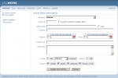
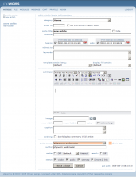
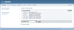

| To create a new article, go to the article center and click either on the {IMAGE:../img/button/add_11x11.gif symbol or in the left navigation on "new article". On the page that appears, you can enter the basic information for the new article: |
Creating New Articles
|  |
Field descriptions
|
||||||||||||||||||||||||||||||||||||||||||||||||||||||||||||

 SITE}
SITE}
Nachdem Sie Ihre Einstellungen vorgenommen haben, bestätigen Sie diese mit „Neuen Artikel erstellen“.
|  |
Now you see an overview of your settings, along with the option to create an article summary and assign article ownership.
summary: (optional): A summary of the article. This appears in article lists (e.g. the search results) and as an introduction to the article in the full article presentation. The look of this field varies greatly depending on the type of browser being used, and unfortunately does not function properly in all browsers. There is a toolbar at the top of this field that is similar to those found in common word-processors, and it works the same way. For instance, you can click on the “B” button in order to initiate bold-face text.
template article listing / display full article (optional):
Here you can choose a template for article and summary. Choose for a test the sample.tmpl in the dropdown menues. You will find the template for article listing in /template/inc_cntpart/articlesummary/list and for the full article /template/inc_cntpart/articlesummary/article.
image (optional): Here the name of the selected image is indicated. This image will
appear alongside the article summary. You can select and/or exchange the picture with
the following buttons:
 Click, in order to open the phpwcms image browser (you can find more information on this in “the phpwcms browser" section, further down) and select an image.
Click, in order to open the phpwcms image browser (you can find more information on this in “the phpwcms browser" section, further down) and select an image.
 Click, in order to remove the currently selected image.
Click, in order to remove the currently selected image.
max. width/max. height (optional): Here you can specify maximum width and/or
height of the image. If the actual image is larger than the maximum dimensions you
specify, then the image is automatically resized accordingly, whereby the proportions
remain intact. If you leave either or both of these fields empty, phpwcms uses the
maximum dimension(/s) of the image, while maintaining proportionality.
click enlarge (optional): With this option you can indicate whether the visitor can click on the image to open a view of the full-size image in a pop-up window.
caption (optional): Here you can enter a caption (a description of the image, for
example), which will appear below the image.
rendering (optional): Check this if you do not wish the summary to be displayed at the beginning of the full presentation of the article (for instance, if the summary is more of a synopsis than an introduction).
article owner: With this pull-down menu you can assign ownership of the article. Only
the article’s owner or an administrator can edit an existing article. Unless you choose
another owner, you are the article’s owner by default.
author (optional): If the author of the article is someone other than yourself, you may attribute authorship to the appropriate party in this field.
cache (optional): setup the cache timeout can be from 1 minute up to 1 month. check the box if you don't want to use the cache for the specified article. standard mena the conf.inc.php value will be used!
search (optional): check the box and the search function will exclude the content while use the search
status (optional): Here you can review the settings you’ve chosen regarding the
visibility of the article to viewers. Remember that in order for visitors of the Website to
be able to see the article, it must be set to both "visible" and "public". These
designations also appear in the article center as and symbols, adjacent the article’s
title (see also the section "the article center" further above).
sitemap (optional): box unchecked the article will be displayed into the sitemap.
After you’ve reviewed your settings and have optionally provided summary details,
confirm these with "update" or "Save & close" to discard all changes press "Cancel",

|  |
Towards the top of the screen you see a summary of the most important settings of
your new article. In addition the following symbols appear:
Articles, like already described above, contain content as well as the rules for how you
want that content presented. This content may be comprised of text, pictures, links and
other components of a web page. In phpwcms you can join blocks of content just as
you would join components, in order to create the desired article.
You can add blocks of content by using the pull-down menu in the lower section of the
page. Simply select the type of content you wish to create and if the browser does not
forward you automatically, just click on "ADD content part".
You are able to choose from the following types of content, herein referred to as
‘content-parts‘:
plain text: Create a plain text paragraph including an optional title and subtitle.
html: With this component you can add pure HTML code to your article in order to
accomplish special tasks, such as implementing an imagemap or starting an external
script.
WYSIWYG HTML: You can also place HTML code within the article using this
component, and can edit it directly or indirectly by switching between HTML and design
mode. (functions only in Windows Internet Explorer and in Mozilla Firefox).
code: This is a special text module, which is designed for the presentation of sample
code, and will print the content in a literal fashion (will not execute code), using a
uniform-width font.
text w/ image: Create a plain text paragraph with an accompanying image. For the
presentation of several images, use following option.
images: Create a plain text paragraph with multiple accompanying images.
list (table): Create a simple bulleted list.
list: Create a multi-level (indented levels) bulleted list.
link & e-mail: Create a link to a Web or e-mail address, with optional ‘specify target‘.
link list: Generate a list of links to Web or e-mail addresses.
link article: Create a link to another article on the website.
article menu: Generate a list consisting of links to each of the articles from any one
structure level of the website.
multimedia: Create a multimedia object (video, audio or Flash).
file list: Generate a list of one or more links to file(/s), which visitors can download.
e-card: Allow visitors to send image greetings via e-mail.
e-mail form: Create a form for e-mail, through which the visitor can send a message
directly to the recipient, in order to send, for example, an order or an inquiry.
newsletter: This component does not yet function as of version 1.1-RC4 of phpwcms.
In the future, the component will allow the visitor the option of subscribing or
unsubscribing to newsletter deliveries.
search: This component presents a search field on the web page, which gives the
visitor the ability to search the website.
guestbook / comm: Create a customizable guestbook function.
sitemap: Generates a sitemap.
bid: This component allows visitors to place bids on an item.
ext. content: Inserts the contents of a file or url
rollover images: Creates a row or column of thumbnails, along with a large
representation of whichever thumbnail the mouse is currently rolling over.
your new article. In addition the following symbols appear:
|
|
Edit the article basis information. |
|
|
Indicates that the article is invisible to visitors of the website |
|
|
Indicates that the article is visible to visitors of the website |
|
|
Delete this article |


Articles, like already described above, contain content as well as the rules for how you
want that content presented. This content may be comprised of text, pictures, links and
other components of a web page. In phpwcms you can join blocks of content just as
you would join components, in order to create the desired article.
You can add blocks of content by using the pull-down menu in the lower section of the
page. Simply select the type of content you wish to create and if the browser does not
forward you automatically, just click on "ADD content part".
You are able to choose from the following types of content, herein referred to as
‘content-parts‘:
plain text: Create a plain text paragraph including an optional title and subtitle.
html: With this component you can add pure HTML code to your article in order to
accomplish special tasks, such as implementing an imagemap or starting an external
script.
WYSIWYG HTML: You can also place HTML code within the article using this
component, and can edit it directly or indirectly by switching between HTML and design
mode. (functions only in Windows Internet Explorer and in Mozilla Firefox).
code: This is a special text module, which is designed for the presentation of sample
code, and will print the content in a literal fashion (will not execute code), using a
uniform-width font.
text w/ image: Create a plain text paragraph with an accompanying image. For the
presentation of several images, use following option.
images: Create a plain text paragraph with multiple accompanying images.
list (table): Create a simple bulleted list.
list: Create a multi-level (indented levels) bulleted list.
link & e-mail: Create a link to a Web or e-mail address, with optional ‘specify target‘.
link list: Generate a list of links to Web or e-mail addresses.
link article: Create a link to another article on the website.
article menu: Generate a list consisting of links to each of the articles from any one
structure level of the website.
multimedia: Create a multimedia object (video, audio or Flash).
file list: Generate a list of one or more links to file(/s), which visitors can download.
e-card: Allow visitors to send image greetings via e-mail.
e-mail form: Create a form for e-mail, through which the visitor can send a message
directly to the recipient, in order to send, for example, an order or an inquiry.
newsletter: This component does not yet function as of version 1.1-RC4 of phpwcms.
In the future, the component will allow the visitor the option of subscribing or
unsubscribing to newsletter deliveries.
search: This component presents a search field on the web page, which gives the
visitor the ability to search the website.
guestbook / comm: Create a customizable guestbook function.
sitemap: Generates a sitemap.
bid: This component allows visitors to place bids on an item.
ext. content: Inserts the contents of a file or url
rollover images: Creates a row or column of thumbnails, along with a large
representation of whichever thumbnail the mouse is currently rolling over.
Article created: Monday, 16. August 2004
Last Changes: Tuesday, 4. January 2011
Last Changes: Tuesday, 4. January 2011